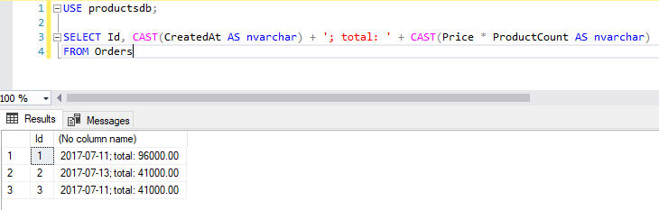
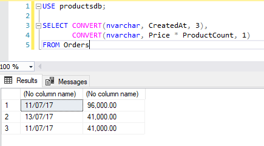

Преобразование данных
Когда мы присваиваем значение одного одного типа столбцу, который хранит данные другого типа, либо выполняем операции, которые вовлекают данные разных типов, SQL Server пытается выполнить преобразование и привести используемое значение к нужному типу. Но не все преобразования SQL Server может выполнить автоматически. SQL Server может выполнять неявные преобразования от типа с меньшим приоритетом к типу с большим приоритетом. Таблица приоритетов (чем выше, тем больший приоритет):
| datetime |
| smalldatetime |
| float |
| real |
| decimal |
| money |
| smallmoney |
| int |
| smallint |
| tinyint |
| bit |
| nvarchar |
| nchar |
| varchar |
| char |
То есть SQL Server автоматически может преобразовать число 100.0 (float) в дату и время (datetime).
В тех случаях, когда необходимо выполнить преобразования от типов с высшим приоритетом к типам с низшим приоритетом, то надо выполнять явное приведение типов. Для этого в T-SQL определены две функции: CONVERT и CAST.
Функция CAST преобразует выражение одного типа к другому. Она имеет следующую форму:
1 | CAST(выражение AS тип_данных) |
Для примера возьмем следующие таблицы:
1 2 3 4 5 6 7 8 9 10 11 12 13 14 15 16 17 18 19 20 21 22 | CREATE TABLE Products( Id INT IDENTITY PRIMARY KEY, ProductName NVARCHAR(30) NOT NULL, Manufacturer NVARCHAR(20) NOT NULL, ProductCount INT DEFAULT 0, Price MONEY NOT NULL);CREATE TABLE Customers( Id INT IDENTITY PRIMARY KEY, FirstName NVARCHAR(30) NOT NULL);CREATE TABLE Orders( Id INT IDENTITY PRIMARY KEY, ProductId INT NOT NULL REFERENCES Products(Id) ON DELETE CASCADE, CustomerId INT NOT NULL REFERENCES Customers(Id) ON DELETE CASCADE, CreatedAt DATE NOT NULL, ProductCount INT DEFAULT 1, Price MONEY NOT NULL); |
Например, при выводе информации о заказах преобразует числовое значение и дату в строку:
1 2 | SELECT Id, CAST(CreatedAt AS nvarchar) + '; total: ' + CAST(Price * ProductCount AS nvarchar) FROM Orders |

Convert
Большую часть преобразований охватывает функция CAST. Если же необходимо какое-то дополнительное форматирование, то можно использовать функцию CONVERT. Она имеет следующую форму:
1 | CONVERT(тип_данных, выражение [, стиль]) |
Третий необязательный параметр задает стиль форматирования данных. Этот параметр представляет числовое значение, которое для разных типов данных имеет разную интерпретацию. Например, некоторые значения для форматирования дат и времени:
0или100- формат даты "Mon dd yyyy hh:miAM/PM" (значение по умолчанию)1или101- формат даты "mm/dd/yyyy"3или103- формат даты "dd/mm/yyyy"7или107- формат даты "Mon dd, yyyy hh:miAM/PM"8или108- формат даты "hh:mi:ss"10или110- формат даты "mm-dd-yyyy"14или114- формат даты "hh:mi:ss:mmmm" (24-часовой формат времени)
Некоторые значения для форматирования данных типа money в строку:
0- в дробной части числа остаются только две цифры (по умолчанию)1- в дробной части числа остаются только две цифры, а для разделения разрядов применяется запятая2- в дробной части числа остаются только четыре цифры
Например, выведем дату и стоимость заказов с форматированием:
1 2 3 | SELECT CONVERT(nvarchar, CreatedAt, 3), CONVERT(nvarchar, Price * ProductCount, 1) FROM Orders |

TRY_CONVERT
При использовании функций CAST и CONVERT SQL Server выбрасывает исключение, если данные нельзя привести к определенному типу. Например:
1 | SELECT CONVERT(int, 'sql') |
Чтобы избежать генерации исключения можно использовать функцию TRY_CONVERT. Ее использование аналогично функции CONVERT за тем исключением, что если выражение не удается преобразовать к нужному типу, то функция возвращает NULL:
1 2 | SELECT TRY_CONVERT(int, 'sql') -- NULLSELECT TRY_CONVERT(int, '22') -- 22 |
Дополнительные функции
Кроме CAST, CONVERT, TRY_CONVERT есть еще ряд функций, которые могут использоваться для преобразования в ряд типов:
STR(float [, length [,decimal]]): преобразует число в строку. Второй параметр указывает на длину строки, а третий - сколько знаков в дробной части числа надо оставлять
CHAR(int): преобразует числовой код ASCII в символ. Нередко используется для тех ситуаций, когда необходим символ, который нельзя ввести с клавиатуры
ASCII(char): преобразует символ в числовой код ASCII
NCHAR(int): преобразует числовой код UNICODE в символ
UNICODE(char): преобразует символ в числовой код UNICODE
1 2 3 4 5 | SELECT STR(123.4567, 6,2) -- 123.46SELECT CHAR(219) -- ЫSELECT ASCII('Ы') -- 219SELECT NCHAR(1067) -- ЫSELECT UNICODE('Ы') -- 1067 |